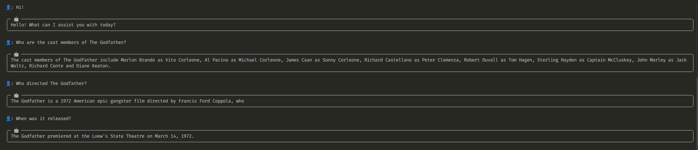

Usage¤
Example RAG Application¤
This guide demonstrates how to create a Retrieval-Augmented Generation (RAG) pipeline using bookacle. You only need 16 lines of code to get started!
Full Code¤
The complete example shows how to load a document, create a RAPTOR tree for retrieval, and run a query on the document.
Code
from bookacle.loaders import pymupdf_loader
from bookacle.models.embedding import SentenceTransformerEmbeddingModel
from bookacle.models.message import Message
from bookacle.models.qa import OllamaQAModel
from bookacle.models.summarization import HuggingFaceLLMSummarizationModel
from bookacle.splitters import HuggingFaceTextSplitter
from bookacle.tree.builder import ClusterTreeBuilder
from bookacle.tree.config import ClusterTreeConfig, TreeRetrieverConfig
from bookacle.tree.retriever import TreeRetriever
documents = pymupdf_loader(file_path="data/the-godfather.pdf")
embedding_model = SentenceTransformerEmbeddingModel(
model_name="sentence-transformers/all-MiniLM-L6-v2"
)
summarization_model = HuggingFaceLLMSummarizationModel(
model_name="Qwen/Qwen2-0.5B-Instruct",
summarization_length=100,
)
qa_model = OllamaQAModel(model_name="qwen2.5:0.5b-instruct")
document_splitter = HuggingFaceTextSplitter(tokenizer=embedding_model.tokenizer)
config = ClusterTreeConfig(
embedding_model=embedding_model,
summarization_model=summarization_model,
document_splitter=document_splitter,
)
tree_builder = ClusterTreeBuilder(config=config)
tree = tree_builder.build_from_documents(documents=documents)
retriever_config = TreeRetrieverConfig(embedding_model=embedding_model)
retriever = TreeRetriever(config=retriever_config)
query = "Who are the cast members of The Godfather?"
_, context = retriever.retrieve(query=query, tree=tree)
system_prompt = """You are a helpful assistant, designed to help users understand documents and answer questions on the documents.
Use your knowledge and the context passed to you to answer user queries.
The context will be text extracted from the document. It will be denoted by CONTEXT: in the prompt.
The user's query will be denoted by QUERY: in the prompt.
Do NOT explicitly state that you are referring to the context.
"""
history = [Message(role="system", content=system_prompt)]
answer = qa_model.answer(
question=query, context=context, stream=False, history=history
)
print(f"Answer:\n{answer['content']}")
Step-by-Step Walkthrough¤
We now walk through the code step-by-step with explanations of each part.
Imports
from bookacle.loaders import pymupdf_loader
from bookacle.models.embedding import SentenceTransformerEmbeddingModel
from bookacle.models.qa import OllamaQAModel
from bookacle.models.summarization import HuggingFaceLLMSummarizationModel
from bookacle.splitters import HuggingFaceTextSplitter
from bookacle.tree.builder import ClusterTreeBuilder
from bookacle.tree.config import ClusterTreeConfig, TreeRetrieverConfig
from bookacle.tree.retriever import TreeRetriever
from bookacle.models.message import Message
We start by loading the data file using pymupdf_loader(), which uses PyMuPDF to load the PDF file as text. The example uses the first 2 pages (when exported in A3) of the Wikipedia entry on The Godfather:
documents = pymupdf_loader(file_path="data/the-godfather.pdf")
print(f"Number of documents: {len(documents)}")
print(f"First document:\n{documents[0]}")
Number of documents: 2
First document:
{'page_content': 'The Godfather\nTheatrical release poster\nDirected by\nFrancis Ford Coppola\nScreenplay by\nMario Puzo\nFrancis Ford Coppola\nBased on\nThe Godfather\nby Mario Puzo\nProduced by\nAlbert S. Ruddy\nStarring\nMarlon Brando\nAl Pacino\nJames Caan\nRichard Castellano\nRobert Duvall\nSterling Hayden\nJohn Marley\nRichard Conte\nDiane Keaton\nCinematography\nGordon Willis\nEdited by\nWilliam Reynolds\nPeter Zinner\nMusic by\nNino Rota\nProduction\ncompanies\nParamount Pictures\nAlfran Productions\nDistributed by\nParamount Pictures\nRelease dates\nMarch\xa014,\xa01972 (Loew\'s\nState Theatre)\nMarch\xa024,\xa01972 (United\nStates)\nRunning time\n175 minutes\nCountry\nUnited States\nLanguage\nEnglish\nBudget\n$6–7.2 million\nBox office\n$250–291 million\nThe Godfather\nThe Godfather is a 1972 American epic gangster film directed by Francis Ford Coppola, who\nco-wrote the screenplay with Mario Puzo, based on Puzo\'s best-selling 1969 novel. The film stars\nan ensemble cast including Marlon Brando, Al Pacino, James Caan, Richard Castellano, Robert\nDuvall, Sterling Hayden, John Marley, Richard Conte and Diane Keaton. It is the first\ninstallment in The Godfather trilogy, chronicling the Corleone family under patriarch Vito\nCorleone (Brando) from 1945 to 1955. It focuses on the transformation of his youngest son,\nMichael Corleone (Pacino), from reluctant family outsider to ruthless mafia boss.\nParamount Pictures obtained the rights to the novel for $80,000, before it gained popularity.\nStudio executives had trouble finding a director; the first few candidates turned down the\nposition before Coppola signed on to direct the film but disagreement followed over casting\nseveral characters, in particular, Vito (Brando) and Michael (Pacino). Filming took place\nprimarily in locations around New York City and Sicily, and it was completed ahead of schedule.\nThe score was composed principally by Nino Rota, with additional pieces by Carmine Coppola.\nThe Godfather premiered at the Loew\'s State Theatre on March 14, 1972, and was widely\nreleased in the United States on March 24, 1972. It was the highest-grossing film of 1972, and\nwas for a time the highest-grossing film ever made, earning between $250 and $291 million at\nthe box office. The film was acclaimed by critics and audiences, who praised its performances—\nparticularly those of Brando and Pacino—direction, screenplay, story, cinematography, editing,\nscore and portrayal of the mafia. The Godfather launched the successful careers of Coppola,\nPacino and other relative newcomers in the cast and crew. At the 45th Academy Awards, the film\nwon Best Picture, Best Actor (Brando) and Best Adapted Screenplay (for Puzo and Coppola). In\naddition, the seven other Oscar nominations included Pacino, Caan and Duvall, all for Best\nSupporting Actor, and Coppola for Best Director.\nThe Godfather is regarded as one of the greatest and most influential films ever made, as well as\na landmark of the gangster genre. It was selected for preservation in the U.S. National Film\nRegistry of the Library of Congress in 1990, being deemed "culturally, historically, or\naesthetically significant" and is ranked the second-greatest film in American cinema (behind\nCitizen Kane) by the American Film Institute. It was followed by sequels The Godfather Part II\n(1974) and The Godfather Part III (1990). Pauline Kael wrote that "If ever there was a great\nexample of how the best popular movies come out of a merger of commerce and art, The\nGodfather is it."\nIn 1945, the New York City Corleone family don, Vito Corleone, listens to requests during his\ndaughter Connie\'s wedding to Carlo Rizzi. Vito\'s youngest son Michael, a Marine who has thus\nfar stayed out of the family business, introduces his girlfriend, Kay Adams, to his family at the\nreception. Johnny Fontane, a popular singer and Vito\'s godson, seeks Vito\'s help in securing a\nmovie role. Vito sends his consigliere, Tom Hagen, to persuade studio president Jack Woltz to\noffer Johnny the part. Woltz refuses Hagen\'s request at first, but soon complies after finding the severed head of his prized stud horse in his\nbed.\nAs Christmas approaches, drug baron Virgil "The Turk" Sollozzo asks Vito to invest in his narcotics business and for police protection. Vito\ndeclines, citing that involvement in narcotics would alienate his political connections. Suspicious of Sollozzo\'s partnership with the Tattaglia\ncrime family, Vito sends his enforcer Luca Brasi to the Tattaglias on an espionage mission. Brasi is garroted to death during the initial meeting.\nLater, enforcers gun down Vito and coerce Hagen into a meeting. With Vito\'s first-born Sonny now in command, Sollozzo pressures Hagen to\npersuade Sonny to accept the narcotics deal. Vito survives the shooting and is visited in the hospital by Michael, who finds him unprotected\nafter NYPD officers on Sollozzo\'s payroll clear out Vito\'s guards. Michael thwarts the attempt on his father\'s life but is beaten by corrupt police\ncaptain Mark McCluskey. After the attempted hit at the hospital, Sonny retaliates with a hit on Bruno Tattaglia. Sollozzo and McCluskey\nrequest to meet with Michael and settle the dispute. Michael feigns interest and agrees to meet, but hatches a plan with Sonny and Corleone\ncapo Clemenza to kill them and go into hiding. Michael meets Sollozzo and McCluskey at a Bronx restaurant; after retrieving a handgun\nplanted in the bathroom by Clemenza, he shoots both men dead.\nDespite a clampdown by the authorities for the killing of a police captain, the Five Families erupt in open warfare. Michael takes refuge in\nSicily and Fredo, Vito\'s second son, is sheltered by Moe Greene in Las Vegas. In Sicily, Michael meets and marries a local woman, Apollonia.\nSonny publicly attacks and threatens Carlo for physically abusing Connie. When he abuses her again, Sonny speeds to their home but is\nambushed and murdered by gangsters at a highway toll booth. Apollonia is killed shortly thereafter by a car bomb intended for Michael.\nDevastated by Sonny\'s death and tired of war, Vito sets a meeting with the Five Families. He assures them that he will withdraw his opposition\nto their narcotics business and forgo avenging Sonny\'s murder. His safety guaranteed, Michael returns home to enter the family business and\nPlot\nThe Godfather - Wikipedia\nhttps://en.wikipedia.org/wiki/The_Godfather\n1 of 11\n19/10/24, 14:37\n', 'metadata': {'format': 'PDF 1.7', 'title': '', 'author': '', 'subject': '', 'keywords': '', 'creator': 'Mozilla Firefox 131.0.2', 'producer': 'cairo 1.18.0 (https://cairographics.org)', 'creationDate': "D:20241019143725+05'30", 'modDate': '', 'trapped': '', 'encryption': None, 'page': 0}}
More on Document Loaders
See Document Loaders for more details on loaders and how you can create your own loaders.
Then we create the embedding model and the summarization model that will be used to create the RAPTOR tree. We also create the question-answering model that will be used to answer user queries on the PDF document.
- For the embedding model, we are using
SentenceTransformerEmbeddingModelto load theall-MiniLM-L6-v2model from thesentence-transformerslibrary. - For the summarization model, we are using
HuggingFaceLLMSummarizationModelto load theQwen/Qwen2-0.5B-InstructLLM from HuggingFace. - For the question-answering model, we are using
OllamaQAModelto load theqwen2.5:0.5b-instructmodel from Ollama.
embedding_model = SentenceTransformerEmbeddingModel(
model_name="sentence-transformers/all-MiniLM-L6-v2"
)
summarization_model = HuggingFaceLLMSummarizationModel(
model_name="Qwen/Qwen2-0.5B-Instruct",
summarization_length=100,
)
qa_model = OllamaQAModel(model_name="qwen2.5:0.5b-instruct")
print(f"Embedding Model: {embedding_model}")
print(f"Summarization Model: {summarization_model}")
print(f"QA Model: {qa_model}")
Embedding Model: SentenceTransformerEmbeddingModel(model_name='sentence-transformers/all-MiniLM-L6-v2', use_gpu=False)
Summarization Model: HuggingFaceLLMSummarizationModel(model_name='Qwen/Qwen2-0.5B-Instruct', summarization_length=100, system_prompt='', use_gpu=False)
QA Model: OllamaQAModel(model_name='qwen2.5:0.5b-instruct')
More on Models
See Models for more details on models and how you can create your own models.
We then create the document splitter that will be used to split documents into chunks. We are using HuggingFaceTextSplitter, which uses a HuggingFace tokenizer as the length function to decide when a piece of text should be split.
document_splitter = HuggingFaceTextSplitter(tokenizer=embedding_model.tokenizer)
print(document_splitter)
HuggingFaceTextSplitter(tokenizer=BertTokenizerFast(name_or_path='sentence-transformers/all-MiniLM-L6-v2', vocab_size=30522, model_max_length=256, is_fast=True, padding_side='right', truncation_side='right', special_tokens={'unk_token': '[UNK]', 'sep_token': '[SEP]', 'pad_token': '[PAD]', 'cls_token': '[CLS]', 'mask_token': '[MASK]'}, clean_up_tokenization_spaces=True), added_tokens_decoder={
0: AddedToken("[PAD]", rstrip=False, lstrip=False, single_word=False, normalized=False, special=True),
100: AddedToken("[UNK]", rstrip=False, lstrip=False, single_word=False, normalized=False, special=True),
101: AddedToken("[CLS]", rstrip=False, lstrip=False, single_word=False, normalized=False, special=True),
102: AddedToken("[SEP]", rstrip=False, lstrip=False, single_word=False, normalized=False, special=True),
103: AddedToken("[MASK]", rstrip=False, lstrip=False, single_word=False, normalized=False, special=True),
}, separators=['\n\n', '\n', '.', '!', '?'])
More on Document Splitters
See Document Splitters for more details on splitters and how you can create your own splitters.
You can also use custom tokenizers by implementing the TokenizerLike protocol. See Tokenizers for more details.
Next, we create the RAPTOR tree using ClusterTreeBuilder, which implements the methodology in the RAPTOR paper:
- Split the documents into chunks and create the leaf nodes from these chunks.
- For each subsequent layer:
- Cluster the nodes in the previous layer.
- For each cluster, concatenate the texts of the nodes, summarize the text, embed the summary and create a node.
- Create the layer using the nodes of each cluster.
- Repeat the process till clustering is no longer possible.
config = ClusterTreeConfig(
embedding_model=embedding_model,
summarization_model=summarization_model,
document_splitter=document_splitter,
)
tree_builder = ClusterTreeBuilder(config=config)
tree = tree_builder.build_from_documents(documents=documents)
print(f"Tree: {tree}")
Tree: Tree(num_layers=2)
More on Building the RAPTOR tree
See Building the RAPTOR tree for more details on building the raptor tree and how you can define your own methodology to build the tree.
You can also customize the clustering method used by ClusterTreeBuilder by changing the clustering function and the clustering backend. See Clustering Support for more details.
We then create the retriever using TreeRetriever, which implements both the collapsed-tree and tree-traversal methods from the RAPTOR paper:
retriever_config = TreeRetrieverConfig(embedding_model=embedding_model)
retriever = TreeRetriever(config=retriever_config)
print(f"Retriever: {retriever}")
Retriever: TreeRetriever()
More on Retrievers
See Retriever for more details on retrievers and how you can implement your own retrievers.
Then, we send a query to the retriever and fetch relevant context:
query = "Who are the cast members of The Godfather?"
_, context = retriever.retrieve(query=query, tree=tree)
print(f"Retrieved context:\n{context}")
Retrieved context:
Mario Puzo wrote the screenplay for the movie "The Godfather", which chronicles the life of Vito Corleone, one of the five families of the Mafia. The film stars an ensemble cast including Marlon Brando, Al Pacino, James Caan, Richard Castellano, Robert Duvall, Sterling Hayden, John Marley, Richard Conte and Diane Keaton. The film focuses on the transformation of Michael Corleone from a reluctant outsider
The Godfather is an epic gangster film directed by Francis Ford Coppola. It stars Marlon Brando, Al Pacino, James Caan, Richard Castellano, Robert Duvall, Sterling Hayden, John Marley, Richard Conte, Diane Keaton, Cesar Romero, and others. It tells the story of the Corleone family from 1945 to 1955, focusing on the transformation of Vito Corleone, the youngest son.
the office and pay reverence to Michael as "Don Corleone".
▪ Marlon Brando as Vito Corleone: crime boss and
patriarch of the Corleone family
▪ Al Pacino as Michael Corleone: Vito's youngest son
▪ James Caan as Sonny Corleone: Vito's eldest son
▪ Richard Castellano as Peter Clemenza: a caporegime in
the Corleone crime family, Sonny's godfather
▪ Robert Duvall as Tom Hagen: Corleone consigliere,
lawyer
, and unofficial adopted member of the
Corleone family
▪ Sterling Hayden as Captain McCluskey: a corrupt
police captain on Sollozzo's payroll
▪ John Marley as Jack Woltz: Hollywood film producer
who is intimidated by the Corleones
▪ Richard Conte as Emilio Barzini: a crime boss of a rival
family
▪ Gianni Russo as Carlo Rizzi: Connie's abusive husband
▪ John Cazale as Fredo Corleone: Vito's middle son
▪ Rudy Bond as Cuneo: a crime boss of a rival family
▪ Al Martino as Johnny Fontane: a singer and Vito's
godson
▪ Morgana King as Carmela Corleone: Vito's wife
▪ Lenny Montana as Luca Brasi: Vito's enforcer
▪ Johnny Martino as Paulie Gatto: a soldier in the
Corleone crime family
▪ Salvatore Corsitto as Amerigo Bonasera: the
undertaker who asks for a favor at Connie's wedding
▪ Richard Bright as Al Neri: the soldier in the Corleone
crime family who becomes Michael's enforcer
▪ Alex Rocco as Moe Greene: a Jewish mobster and Las
Vegas casino proprietor
▪ Tony Giorgio as Bruno Tattaglia
co-wrote the screenplay with Mario Puzo, based on Puzo's best-selling 1969 novel. The film stars
an ensemble cast including Marlon Brando, Al Pacino, James Caan, Richard Castellano, Robert
Duvall, Sterling Hayden, John Marley, Richard Conte and Diane Keaton. It is the first
installment in The Godfather trilogy, chronicling the Corleone family under patriarch Vito
Corleone (Brando) from 1945 to 1955. It focuses on the transformation of his youngest son,
Michael Corleone (Pacino), from reluctant family outsider to ruthless mafia boss.
Paramount Pictures obtained the rights to the novel for $80,000, before it gained popularity.
Studio executives had trouble finding a director; the first few candidates turned down the
position before Coppola signed on to direct the film but disagreement followed over casting
several characters, in particular, Vito (Brando) and Michael (Pacino). Filming took place
primarily in locations around New York City and Sicily, and it was completed ahead of schedule.
Finally, we set the system prompt (optional) for the question-answering model and get an answer from the it:
system_prompt = """You are a helpful assistant, designed to help users understand documents and answer questions on the documents.
Use your knowledge and the context passed to you to answer user queries.
The context will be text extracted from the document. It will be denoted by CONTEXT: in the prompt.
The user's query will be denoted by QUERY: in the prompt.
Do NOT explicitly state that you are referring to the context.
"""
history = [Message(role="system", content=system_prompt)]
answer = qa_model.answer(question=query, context=context, stream=False, history=history)
print(f"Answer:\n{answer['content']}")
Answer:
The cast members of "The Godfather" are as follows:
1. Marlon Brando - Vito Corleone
2. Al Pacino - Michael Corleone
3. James Caan - Sonny Corleone
4. Richard Castellano - Peter Clemenza
5. Robert Duvall - Tom Hagen
6. Sterling Hayden - Captain McCluskey
7. John Marley - Jack Woltz
8. Richard Conte - Emilio Barzini
9. Diane Keaton - Gianni Russo
10. Cesar Romero - Carlo Rizzi
11. John Cazale - Fredo Corleone
12. Rudy Bond - Cuneo
13. Al Martino - Johnny Fontane
14. Morgana King - Carmela Corleone
15. Lenny Montana - Luca Brasi
16. Johnny Martino - Paulie Gatto
17. Salvatore Corsitto - Amerigo Bonasera
18. Richard Bright - Al Neri
19. Alex Rocco - Moe Greene
20. Tony Giorgio - Bruno Tattaglia
Chat Interface¤
bookacle comes with a built-in terminal-based chat interface powered by rich and prompt-toolkit, which supports the following:
- Autocompletion in the chat.
- Custom user avatars.
- Markdown rendering.
- Streaming output with a nice progress bar.
- Pass a system prompt to the question-answering model.
- Store chat history in a file as you chat, etc.
Launch from a script¤
The chat interface can be launched in a script by using Chat.
from rich.console import Console
from bookacle.chat import Chat
console = Console()
chat = Chat(
retriever=retriever,
qa_model=qa_model,
console=console,
)
system_prompt = """You are a helpful assistant, designed to help users understand documents and answer questions on the documents.
Use your knowledge and the context passed to you to answer user queries.
The context will be text extracted from the document. It will be denoted by CONTEXT: in the prompt.
The user's query will be denoted by QUERY: in the prompt.
Always respond in Markdown.
"""
chat.run(tree=tree, stream=True, system_prompt=system_prompt)
Here is an example interaction:

Terminal-based Chat¤
You can also use the chat via the CLI to interact with your documents.
bookacle --help
Usage: bookacle [OPTIONS] FILE_PATH
╭─ Arguments ─────────────────────────────────────────────────────────────────────────────────────────────────────────────────────────────────────────────────────────────────────────────────────────────────────────────────────────────────────────────────────────╮
│ * file_path FILE Path to the PDF file. [required] │
╰─────────────────────────────────────────────────────────────────────────────────────────────────────────────────────────────────────────────────────────────────────────────────────────────────────────────────────────────────────────────────────────────────────╯
╭─ Options ───────────────────────────────────────────────────────────────────────────────────────────────────────────────────────────────────────────────────────────────────────────────────────────────────────────────────────────────────────────────────────────╮
│ --loader -l [pymupdf4llm|pymupdf] Loader to use. [default: pymupdf4llm] │
│ --start-page -s INTEGER The page (0-based) in the PDF file to start reading from. If not provided, defaults to 0, reading from the beginning. │
│ --end-page -e INTEGER The page (0-based) in the PDF file to stop reading at (not inclusive). If not provided, the document will be read till the end. │
│ --user-avatar -a TEXT Avatar that should be used for the user during chat. [default: 👤] │
│ --history_file -h TEXT File where chat history should be stored. [default: /home/malay_agr/.bookacle-chat-history.txt] │
│ --config-file -c FILE Custom configuration file. If not provided, the default settings are used. │
│ --prompt-file -p FILE Custom prompts file. If not provided, the default prompts are used. │
│ --version -v Print version and exit. │
│ --install-completion Install completion for the current shell. │
│ --show-completion Show completion for the current shell, to copy it or customize the installation. │
│ --help Show this message and exit. │
╰─────────────────────────────────────────────────────────────────────────────────────────────────────────────────────────────────────────────────────────────────────────────────────────────────────────────────────────────────────────────────────────────────────╯
See Command-Line Interface for more information on the usage.